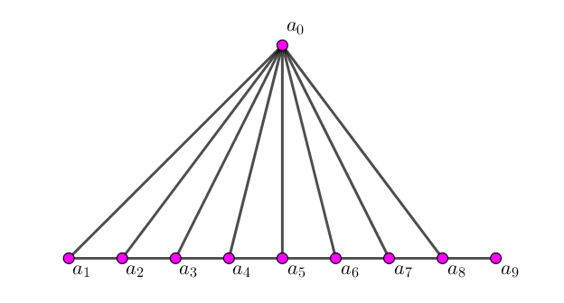

给 Alice 一张 $N$ 个点 $M$ 条边的有标号无向图 $G$，她需要构造一张 $V$ 个点 $E$ 条边的无向图 $H$ 给 Bob。
不过在信息传输过程中图的编号可能会被打乱 (即变为无标号无向图 $H$，在同构意义下视为相同)，Bob 需要还原出那张有标号无向图 $G$ (包括标号)。
$N \leq 1000; M \leq \dbinom N2; V \leq N + 12; E \leq \dbinom V2$，两个程序交互。
考虑如何记录图的信息。首先，原图中的 $\dbinom N2$ 条边我们必须保留，由信息量的理论，我们不可能在更少的点中得到这所有 $\dbinom N2$ 条边的信息。
我们不妨设 $H$ 中 $0 \sim N - 1$ 号点中的连边和 $G$ 相同。那么，如何确定这 $N$ 个点中谁是谁呢？
我们就要考虑这些多余的点了，它们的意义就是还原这所有 $N$ 个点的顺序。
注意到 $N \leq 1000$，故每个 $N$ 可以用一个 10 bit 的二进制数表示，因此，我们可以另取点 $a_0, a_1, a_2, \cdots, a_9$，对于每个 $1 \leq i \leq N$，设 $i$ 的二进制表示为 $\left( c_9 c_8 c_7 \cdots c_2 c_1 c_0 \right)_2$，如果 $c_i = 1$，则连边 $\left( i, a_i \right)$。
这样，我们把确定 $N$ 个点的问题转化为了确定这 $10$ 个点的问题，即，只要能够确定这 $10$ 个点，就可以还原所有 $1000$ 个点。
那如何确定这 $10$ 个点呢？
没错，就是靠最后两个点来定位。我们设它为 $M, R$。
对于除了 $M, R$ 的所有点，我们都将它与 $M$ 连边，这样 $M$ 的度数就会达到 $N + 10$，而这是其它所有点无法企及的 (前 $1000$ 个点的度数至多为 $N + 9$，因为 $N \neq 1023$，$a_i$ 的度数也不可能达到 $1000$，因为总有大约一半的数满足这些位为 $0$)。
这样，我们就可以确保，度数最大的点 (或者说，度数为 $N + 10$ 的唯一点) 就是 $M$。因此，在今后的构造中，必须满足 $M$ 为唯一的度为 $N + 10$ 的点。
接下来点 $R$ 也容易确定了，因为 $M$ 只和 $R$ 不连边，找出它即可。
然后就是确定 $a_0, a_1, \cdots, a_9$ 了，由于 $M$ 的连边已经使用，我们不妨考虑 $R$，我们只将 $R$ 与 $a_0, a_1, \cdots, a_9$ 相连，这样考虑 $R$ 的邻域就能得到所有 $a_0, a_1, \cdots, a_9$ 构成的集合。且 $R$ 的度数也没问题。
紧接着我们需要确定 $a_0, a_1, \cdots, a_9$ 的具体顺序。这个我们只需要构造一张非自同构的图即可，比如下例：
这样我们就可以依次找到 $a_0, a_9, a_8, a_7, \cdots, a_2, a_1$。
然后就可以愉快地得到结果啦。
当然，最后还要进行度数检查，即对于除了 $M$ 外的所有点，我们要确保它的度 $< N + 10$。对于一般的点，上面已经说过，度数至多为 $\left( N - 1 \right) + 9 + 1 = N + 9$。
对于 $a_i$，它至少和另一个 $a_j$ 与 $0$ 没有连边，因此度数 $\leq \left( N + 12 \right) - 3 = N + 9$。
对于 $R$，它只和 $a_i$ 连边，因此度数 $= 10 \leq N + 9$。
故该构造符合题意，且能够正确找出所有的点。
时间复杂度 $O \left( V^2 \right)$。
#include "Alicelib.h"
#include <bits/stdc++.h>
#define addedge(u_, v_) (u[E] = (u_), v[E++] = (v_))
const int MAX = 20030731;
void Alice(int N, int M, int A[], int B[]) {
static int V, E, u[MAX], v[MAX];
int i, j;
V = N + 12, E = 0;
for (i = 0; i < M; ++i) addedge(A[i], B[i]);
for (i = 0; i < N + 10; ++i) addedge(N + 10, i);
for (i = 0; i < 10; ++i) addedge(N + 11, N + i);
for (i = 1; i < 9; ++i) addedge(N, N + i), addedge(N + i, N + i + 1);
for (i = 0; i < N; ++i)
for (j = 0; j < 10; ++j)
if (i >> j & 1) addedge(N + j, i);
InitG(V, E);
for (i = 0; i < E; ++i) MakeG(i, u[i], v[i]);
}
#include "Boblib.h"
#include <bits/stdc++.h>
const int X = 1054, MAX = 20030731;
void Bob(int V, int E, int C[], int D[]) {
static int N, M, u[MAX], v[MAX];
static int G[X][X], deg[X], deg2[X];
static int vc = 0, k[10], w[11], id[X];
static bool ordinary[X];
int i, j, fy, re;
N = V - 12, M = 0;
for (i = 0; i < E; ++i) ++deg[C[i]], ++deg[D[i]], G[C[i]][D[i]] = G[D[i]][C[i]] = 1;
for (fy = 0; fy < V; ++fy) if (deg[fy] >= V - 2) break;
for (re = 0; re < V; ++re) if (!(re == fy || G[fy][re])) break;
for (i = 0; i < V; ++i) if (G[re][i]) k[vc++] = i; assert(vc == 10);
for (i = 0; i < 10; ++i) for (j = 0; j < 10; ++j) deg2[i] += G[k[i]][k[j]];
for (i = 0; i < 10; ++i) deg2[i] == 8 && (w[10] = *w = k[i]), deg2[i] == 1 && (w[9] = k[i]);
for (i = 9; i > 1; w[--i] = k[j])
for (j = 0; j < 10; ++j) if (G[w[i]][k[j]] && k[j] != *w && k[j] != w[i + 1]) break;
for (i = 0; i < V; ++i)
if (ordinary[i] = !(i == fy || i == re || G[re][i]))
for (id[i] = j = 0; j < 10; ++j) id[i] |= G[i][w[j]] << j;
for (i = 0; i < E; ++i)
if (ordinary[C[i]] && ordinary[D[i]]) u[M] = id[C[i]], v[M++] = id[D[i]];
InitMap(N, M);
for (i = 0; i < M; ++i) MakeMap(u[i], v[i]);
}
坑1：此题中关于 Bob 的细节比较多，比如说在计算度数的时候需要考虑比如 "自身不能算入"、"计算导出子图的度数" 等。
坑2：点的编号最好使用 $0 \sim N - 1$，使用 $1 \sim N$ 的话会在 $N = 1$ 处挂 (此时 $a_0$ 的度数为 $11$)。